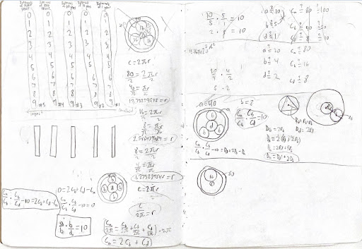
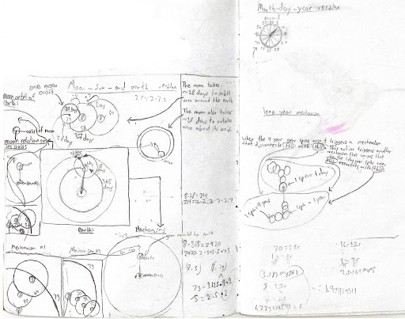

Ideas and Research for Mechanical Devices
Creatively explored countless ideas and concepts for unique, fascinating mechanical devices and innovations.


I always carry a notebook around with me, in which I write my ideas and explore concepts that I have in my head. Specifically, I spent a large amount of time designing concepts for mechanical devices (some of which inspired my later projects).
Some examples of my ideas are: Mechanical closed-loop feedback control systems, calculators, models of the orbits of planets and moons, novel and unconventional pendulum clock escapement and drive mechanisms, leap-year calculating and adjusting mechanisms for watches and perpetual calendars, etc.